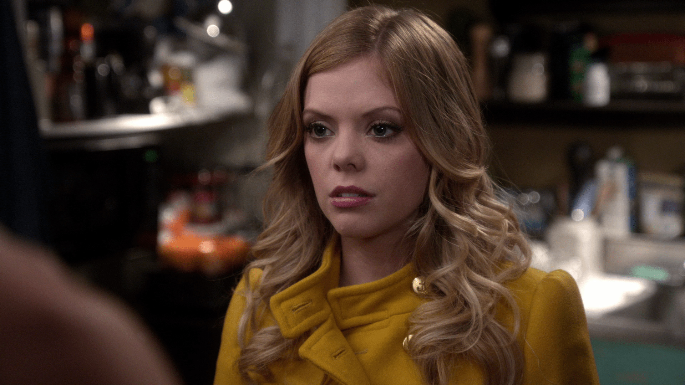
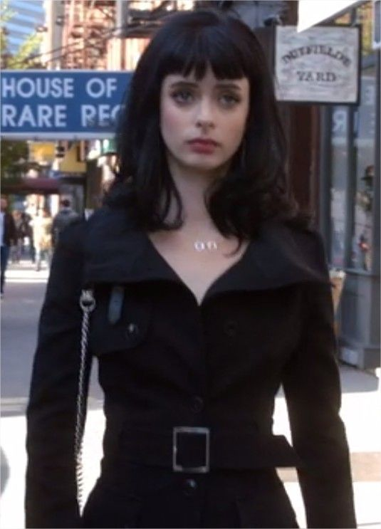
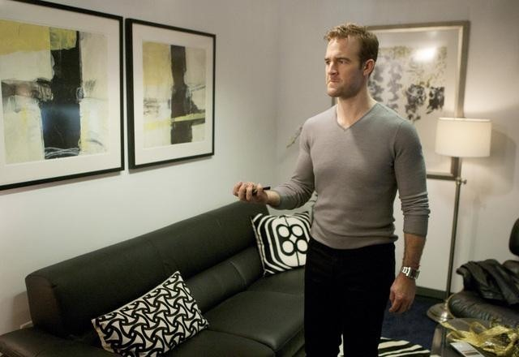
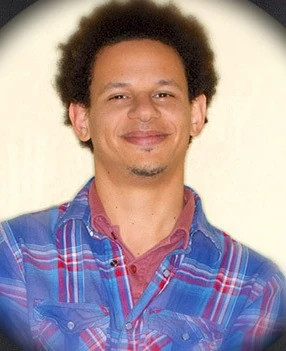

Don't trust the B on Apartment 23, más ampliamente mencionado como Apartment 23, es una sitcom americana estrenada en 2012 y cancelada en 2013. Su creadora Nahnatchka Khan también es escritora de Always Be My Maybe.
La serie sigue a June y Chloe. June se muda a Nueva York para perseguir su plan de vida en su nuevo empleo, pero sus planes se ven truncados tras el inmediato cierre de su empresa. Tras quedarse sin una residencia, se muda con una chica de ciudad de nombre Chloe, la mejor amiga de James Van Der Beek, la cual resulta ser una mujer con poca moral con la que tendrá que aprender lo que es ser una persona de ciudad.
| Personajes | Imagen | Rol |
|---|---|---|
| June Colburn |  | Una rubia del medioeste americano que intenta adaptarse a la vida en Nueva York |
| Chloe |  | Una sociópata que vive la vida sin fijarse en los detalles |
| James Van Der Beek |  | James Van Der Beek, interpretando a... James Van Der Beek, el mejor amigo de Chloe |
| Mark Reynolds |  | El que en un principio sería el gerente de June, se vuelve su colega de trabajo y potencial interés amoroso |